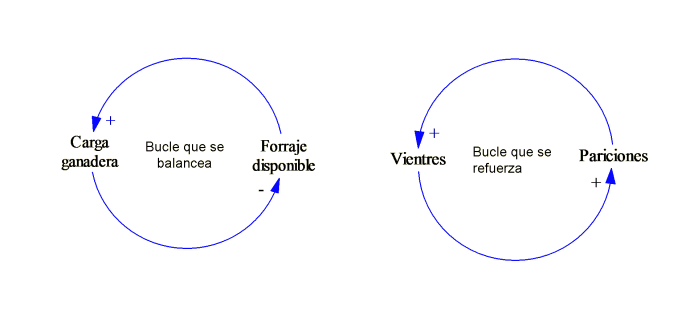
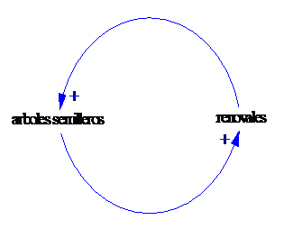

Para entender como
es que la estructura de un sistema produce un determinado
comportamiento, utilizaremos el tipo de notación
gráfica que se emplea para una red de relaciones
expresada como un diagrama de causas circulares CLD (Causal Loop
Diagram). En el diagrama se plasman con frases descriptivas
cuáles son los elementos que componen el sistema, donde las
flechas representan la influencia de causas entre los elementos. En
los extremos de las flechas se adjunta un signo que puede ser
positivo (+) o negativo (-).
Una flecha causal
de un elemento A hacia un elemento B, es positivo (+) denota que un
incremento de la variable A produce un efecto similar sobre la
variable B, de la misma forma un descenso en los valores de la
variable A da lugar a la disminución de la variable B, por
ejemplo
Para completar la
presentación de la terminología utilizada para describir
la estructura del sistema es necesario mencionar que estas son
relaciones lineales de causa y efecto en cadena, las cuáles no
cierran o influyen sobre si mismas, y por ello se las denomina de
bucle abierto. Un análisis de causas y efectos que no tiene en
cuenta los bucles de retroalimentación se denominan
pensamiento de bucle abierto, y este término que usualmente se
lo utiliza con una connotación peyorativa, indica que el
pensamiento no está considerando el rango completo de impactos
de una acción propuesta.
El bucle o
retroalimentación hace referencia a que una causa tiene efecto
sobre si misma a través de influir otras variables y
viceversa. Por ejemplo en el caso de la relación A-> B
(Vientres -> Pariciones) el aumento de las pariciones trae
aparejado un incremento de los vientres, que a su vez traera
aparajedo mayores pariciones, de esta forma se genera un bucle que
se refuerza a si mismo, tanto positiva como negativamente. Por otro
lado en el caso de la relación causal C->D (carga
ganadera->forraje disponible), también se puede observar un
bucle o retroalimentación pero este será de otra
naturaleza al mencionado anteriormente, ya que el incremento de la
carga ganadera producirá una disminución de la cantidad
de forraje, y un incremento del forraje puede permitir elevar la
carga ganadera, es decir que el tipo de causa en un sentido es de
signo contrario al del sentido inverso, está da lugar a un
bucle que se balancea.


Experiencia de implementación de
manejo animal en un establecimiento productivo del productor
Gonzalo Sánchez Ea. Chali Aike.
REFERENCIAS
Para una
introducción didáctica a los sistemas y los CLD puede
leer:
53
Haraldsson H.V.
2000.
97
Kinkwood C.,
Arizona State University,
Una ventaja del
enfoque de los sistemas es que ciertos comportamientos pueden
generalizarse y por ello asimilarse a distintos casos, en el
siguiente enlace pueden estudiarse algunos de los casos más
relevantes:
139
Braun
W.,
Rockefeller College of Public Affairs and Policy. University of
Albany.